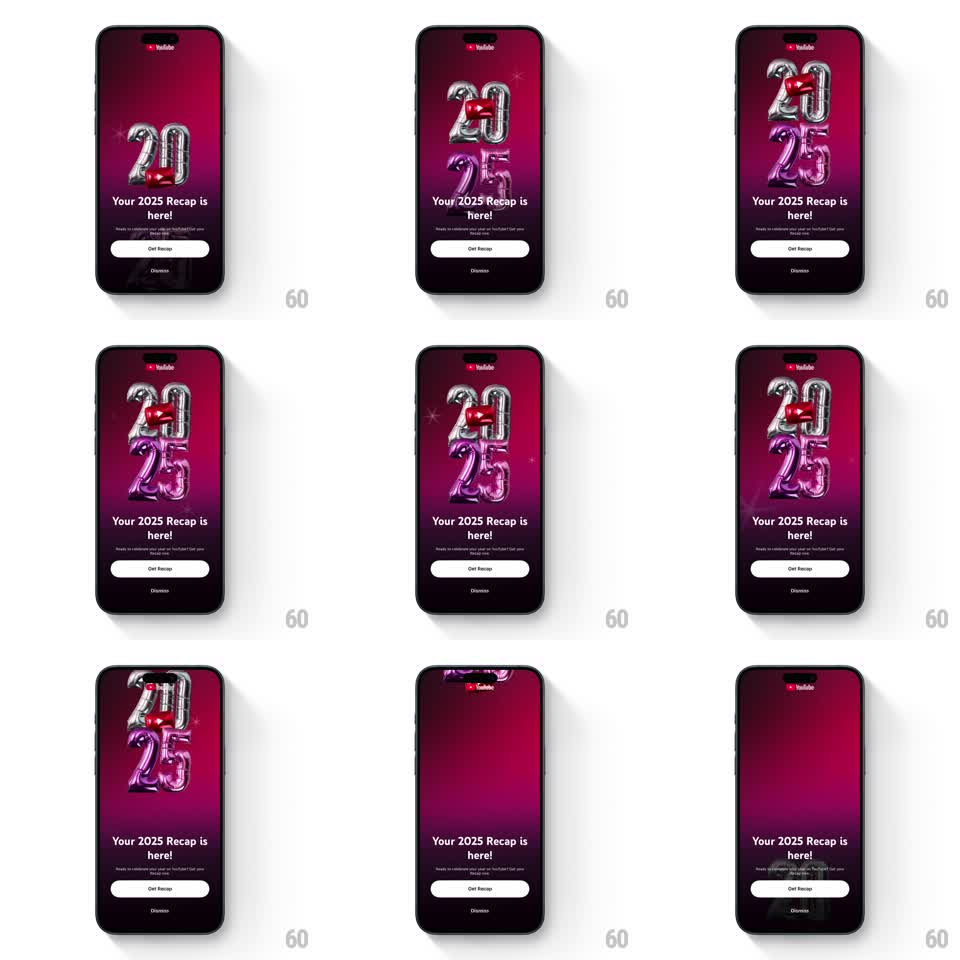

Media
Frame-by-frame

Rebuild this animation 1:1: YouTube's 2025 Recap intro - giant silver-and-magenta foil balloon numerals "2025" with a play-button balloon, gently floating and wiggling over the dark gradient, above Get Recap.

Rebuild this animation 1:1: YouTube's 2025 Recap intro - giant silver-and-magenta foil balloon numerals "2025" with a play-button balloon, gently floating and wiggling over the dark gradient, above Get Recap. ## Integration Integration: stack-agnostic spec - springs given as stiffness/damping, timed motions as duration + curve; map every value to your framework and animation library of choice. ## Scene YouTube Recap intro: a deep magenta-to-black radial gradient, the YouTube logo top-center, and a cluster of mylar foil balloons forming "20 25" in silver and magenta with a red YouTube-play balloon tucked between them. Below: "Your 2025 Recap is here!" with sub copy, a white "Get Recap" pill, and "Dismiss". ## Motion spec Pattern: gently floating foil-balloon cluster with idle wiggle. - Entry: the balloon cluster rises from below-center (translateY 120 -> 0, 700ms ease-out) while inflating from scale 0.85 -> 1, then the headline, copy, and buttons fade up in sequence (250ms each, 100ms apart). - Idle float: the whole cluster bobs (translateY +/-8px, 3.5s sine) while individual balloons counter-drift (translate +/-4px, phase-offset 2.8s loops) so the cluster breathes rather than moving as a rigid block. - Each balloon wiggles: rotation +/-2.5deg on 2-3s loops with random phases; the play-button balloon rotates slightly more (+/-4deg) as the accent. - Foil glints: a specular sweep crosses a random balloon every ~2s (300ms highlight pass), plus sparse sparkle pings at the foil seams. - The gradient behind pulses almost imperceptibly (magenta intensity +/-5%, 6s). ## Calibration - Balloons overlap in a fixed cluster arrangement - the numerals must always read "2025". - All idle motion is slow and low-amplitude - party balloons, not screen savers. ## Reduced motion Static cluster; no bob, wiggle, or glints. ## Don't miss - The red play balloon sits inside the "20" - it is the logo moment of the composition. - Get Recap is a solid white pill; Dismiss is plain text - the hierarchy must hold.